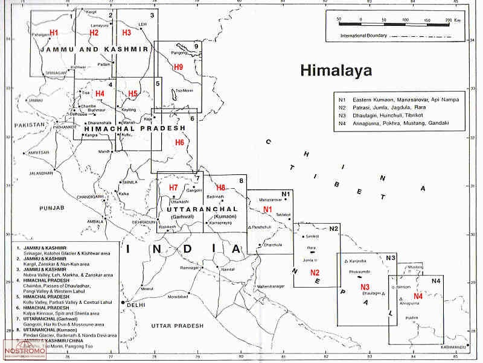

If you spend any time trying to plan a route into a less-visited corner of the Indian Himalaya, you quickly run into the limits of what Google Maps and OpenStreetMap can tell you. The trail might exist, or it might not - the satellite imagery is ambiguous, the OSM coverage is thin, and the terrain is steep enough that being wrong about a route matters. This is where the old paper map series become genuinely useful, and over the past couple of years I’ve been collecting and georeferencing as many of them as I can get hold of.
What follows is a summary of the main sources I know about, covering maps at 1:250,000 scale or better - anything coarser than that isn’t detailed enough to be much help on the ground.
Survey of India - Free
The Survey of India (SOI) topographic series is the gold standard for the region. Produced by the national survey organisation, these come in two scales: the 1:50,000 sheets, and are extraordinarily detailed, and the 1:25,000 sheets, which go even finer and cover parts of the country at near-engineering survey quality. Note that the latter were produced as part of the National Hydrology Project (NHP), with the main aim of informing local stakeholders in flood assessment, mapping etc and therefore don’t have all the features of the standard 1:50K maps. They do have trails, peaks, and camping spots. I’ve written a detailed blog post on how to get the 1:50K maps on your phone (provide link).
Joint Operations Graphics (JOG) - Free
The JOG series was produced by the US Defense Mapping Agency (now NGA) as a global 1:250,000 military topographic series. They are freely available - the US government declassified them and they can be downloaded from various archives.
The cartography is clean and consistent: contour intervals of 100m, with form lines at 50m in gentler terrain. Roads, trails, rivers, settlements, and vegetation cover are all shown. The quality of ground-truth for the Indian Himalaya varies - some sheets are clearly based on aerial photography and are quite accurate, others show the limits of what could be mapped from a distance during the Cold War period.
The georeferenced and tiled versions of the JOG sheets - are available from The Kansas University Library. Also see ramSeraph’s american_world_topo_maps repository on GitHub.
American Map Service (AMS) - Free
The AMS series, also at 1:250,000, predates the JOG and was the earlier US military mapping effort covering much of the world. For India, these are sometimes referred to as the Series U502 maps. The style is similar to JOG but the ground data is older, often from the 1950s and 1960s, which in some parts of the Himalaya actually means less road infrastructure shown and more of the traditional trail network still visible.
The AMS and JOG sheets are close enough in scale and style that for most purposes you can use them interchangeably, picking whichever has better coverage for your area. The georeferenced tiles for both series are in the same repository.
Soviet Genshtab Maps - Free
The Soviet military mapping programme - Генштаб, usually transliterated as Genshtab - produced topographic maps of essentially the entire world at multiple scales, as part of a systematic Cold War intelligence effort. For the Indian Himalaya, the most useful scale is 1:200,000, which gives slightly more detail than the JOG/AMS series. There are also 1:100,000 and higher resolution sheets but don’t cover the Himalaya.
The Genshtab maps have a following among serious mountain travellers and GIS people for a few reasons. The cartography is detailed and the maps were updated more regularly than many Western equivalents. They show land cover - forest, scrub, bare rock, glacier - with a level of care that the AMS sheets don’t match. The main limitation is that they’re in Russian, which takes some getting used to, though the symbology is consistent enough that you can work it out fairly quickly.
The georeferenced versions, tiled and ready for use, are available from ramSeraph’s russian_world_topo_maps repository. Original are here
Olizane Maps - Paid


The limitation is that Olizane’s coverage is concentrated on Ladakh - the map series doesn’t extend into Himachal Pradesh or Uttarakhand in any serious way, which is a gap if you’re working further south and east. They’re also showing their age in places: the third edition came out in 2013, and trail conditions and settlements have changed since then in parts of the region.
Leomann Maps - Paid

Leomann is a British publisher that produced a series of maps of the Indian Himalaya at roughly 1:200,000-250,000 scale. Their style is distinctive: instead of conventional contour lines, they use a ridge-line drawing approach, showing the mountain topography through hand-drawn representations of spurs, ridges and valleys. Peaks and passes are marked with spot heights.
This makes Leomann maps visually expressive and quite good for understanding the overall structure of a mountain group, but less precise for navigation than a contour map. They’re trekking maps rather than topographic maps in the strict sense - the back of each sheet has written route descriptions and area information. Coverage includes Jammu and Kashmir, Ladakh, Himachal Pradesh, and some cross-border areas into Pakistan.
They’re getting harder to find in print, and as older publications the content doesn’t reflect recent changes in road access and settlement.
Getting Them Onto Your Phone
All of these map series, once georeferenced, can be converted into MBTiles and then into SQLite databases and loaded into OsmAnd as map overlays.